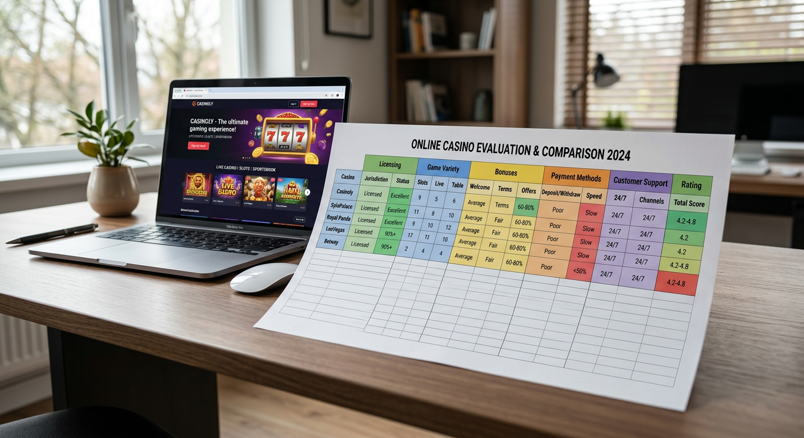
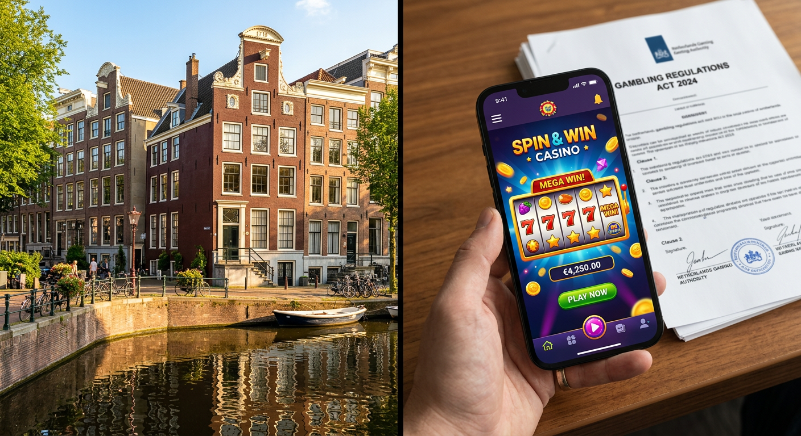
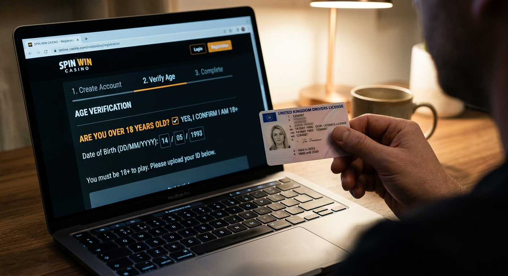
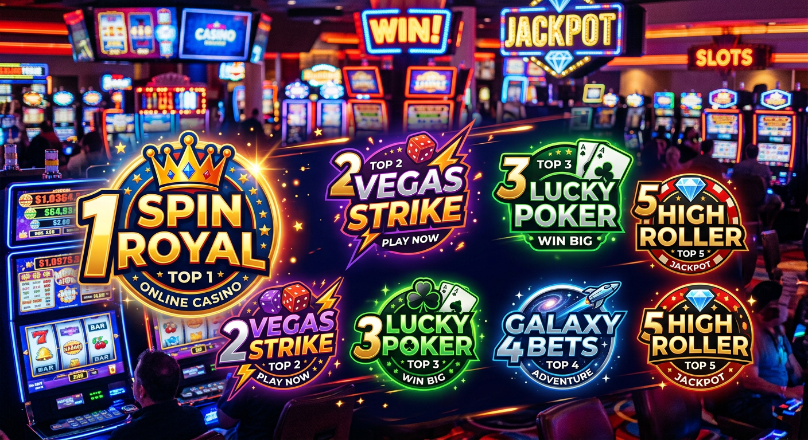

Nieuwe online casino: De complete gids voor de Nederlandse markt in 2026
Welkom in het goklandschap van 2026. De Nederlandse markt voor kansspelen is de afgelopen jaren volwassen geworden en het aanbod is groter dan ooit tevoren. Voor spelers die op zoek zijn naar een nieuwe online casino ervaring, zijn er talloze innovatieve opties bijgekomen. De technologische ontwikkelingen hebben niet stilgestaan, waardoor de speelervaring in 2026 sneller, veiliger en interactiever is dan we ons een paar jaar geleden konden voorstellen.
In dit uitgebreide artikel duiken we diep in de wereld van de nieuwste aanbieders. We kijken niet alleen naar de bonussen, maar ook naar de juridische kaders van de Kansspelautoriteit, de opkomst van hybride betaalmethoden en de integratie van virtual reality in het live segment. Of je nu een ervaren high-roller bent of een recreatieve speler die voor het eerst een gokje waagt, deze gids biedt alle informatie die je nodig hebt om een verantwoorde keuze te maken.
Het vinden van een betrouwbaar platform is essentieel. Met de strenge regelgeving in Nederland in 2026 is de kwaliteit van elk nieuwe online casino aanzienlijk gestegen. We zien dat platformen zoals Goldbet de standaard zetten voor gebruikersinterface en transparantie, terwijl andere nieuwkomers zich richten op nichemarkten zoals e-sports of specialistische tafelspellen.
Wat kun je verwachten van de nieuwste goksites?
De nieuwste generatie goksites in 2026 onderscheidt zich door een sterke focus op personalisatie. Waar je vroeger een statische lobby kreeg, past een modern platform zich nu aan jouw voorkeuren aan. Als je vaak op slots van Pragmatic Play speelt, zal de interface deze spellen direct prominent tonen bij het inloggen. Bovendien is de laadsnelheid van websites geoptimaliseerd door het gebruik van lichtere frameworks en edge computing.
Innovatie stopt niet bij de interface. We zien in 2026 dat gamification een centrale rol speelt. Spelers kunnen avatars aanmaken, missies voltooien en tokens verdienen die inwisselbaar zijn voor extra voordelen. Dit zorgt voor een actieve community die verder gaat dan alleen het draaien aan een slotmachine. Het sociale aspect wordt versterkt door chatfuncties waarbij je winsten kunt delen met vrienden binnen de beveiligde omgeving van de aanbieder.
Daarnaast is de integratie van kunstmatige intelligentie (AI) cruciaal voor verantwoord spelen. Systemen herkennen nu in een vroeg stadium afwijkend speelgedrag en kunnen proactief pauzes voorstellen of limieten aanpassen. Dit maakt een nieuwe online casino in 2026 niet alleen leuker, maar ook een stuk veiliger voor de consument.
Hoe wij elk nieuwe online casino beoordelen

Onze experts hanteren een rigoureus testprotocol voor elke site die de markt betreedt. Het is in 2026 niet meer voldoende om simpelweg een licentie te hebben; de concurrentie is moordend, dus we kijken naar de kleinste details die het verschil maken tussen een goede en een uitmuntende ervaring. Onze beoordeling begint altijd bij de basis: de juridische status en de achtergrond van de exploitant.
We storten zelf geld, testen de klantenservice op onmogelijke tijden en analyseren de kleine lettertjes van de bonusvoorwaarden. Een platform moet bewijzen dat het de belangen van de speler vooropstelt. Transparantie over uitbetalingspercentages (RTP) en de eerlijkheid van de Random Number Generators (RNG) is hierbij een absolute vereiste. Alleen als een aanbieder op alle fronten scoort, krijgt het een plek in onze aanbevelingen.
Veiligheid en de Nederlandse licentie
Veiligheid is het fundament van elk legitiem platform. In 2026 is de Wet Kansspelen op Afstand (KOA) verder aangescherpt om spelersbescherming naar een hoger niveau te tillen. Elk nieuwe online casino moet beschikken over een vergunning van de KSA. Dit betekent dat zij voldoen aan strenge eisen op het gebied van verslavingspreventie, gegevensbeveiliging en financiële stabiliteit.
Controleer altijd of het logo van de Kansspelautoriteit onderaan de website staat. Dit logo is in 2026 direct gekoppeld aan een live database, zodat je met één klik kunt verifiëren of de licentie nog actueel is. Het spelen bij een vergunde aanbieder garandeert dat je persoonlijke gegevens veilig zijn via geavanceerde encryptie en dat je winsten gegarandeerd worden uitbetaald.
Spelaanbod en innovatieve features
Het spelaanbod in een modern nieuwe online casino is overweldigend. We zien in 2026 een sterke verschuiving naar "crash games" en interactieve spelshows. Natuurlijk blijven de klassieke videoslots populair, maar de mechanismen zijn complexer geworden. Denk aan Megaways 2.0 en slots met 3D-graphics die niet onderdoen voor moderne console-games.
Providers zoals Evolution en Stakelogic blijven de markt domineren met hun live dealer studio's. In 2026 is het niet ongebruikelijk om live spellen te spelen met augmented reality-elementen, waarbij de dealer in een virtuele wereld staat die reageert op de acties van de spelers. Dit zorgt voor een immersie die voorheen ondenkbaar was in de online gokwereld.
Klantenservice en gebruiksvriendelijkheid
Een vaak onderschat aspect is de kwaliteit van de ondersteuning. In 2026 verwachten wij van een nieuwe online casino dat er 24/7 een Nederlandstalige chat beschikbaar is. De responstijd mag niet langer zijn dan twee minuten. Bovendien zien we de opkomst van AI-chatbots die eenvoudige vragen over uitbetalingen of bonusstatus direct kunnen afhandelen, waardoor menselijke medewerkers meer tijd hebben voor complexe zaken.
Gebruiksvriendelijkheid vertaalt zich ook in de mobiele ervaring. Aangezien meer dan 85% van de Nederlandse spelers in 2026 via hun smartphone gokt, moet de mobiele website of app vlekkeloos werken. Een intuïtieve navigatie, snelle zoekfuncties en een stabiele verbinding tijdens het spelen van zware grafische games zijn essentieel voor een positieve beoordeling.
Is online gokken in Nederland legaal?

Ja, online gokken is volledig legaal in Nederland, mits de aanbieder een geldige vergunning heeft. Sinds de marktopening is de regelgeving strikt gehandhaafd. In 2026 is het voor illegale aanbieders nagenoeg onmogelijk om de Nederlandse markt te betreden door geavanceerde IP-blocking en samenwerkingen met banken om transacties naar zwarte lijst sites te blokkeren.
De legalisering heeft geleid tot een gezondere markt waarbij de consument centraal staat. De overheid monitort de markt nauwgezet en past de regels aan waar nodig. Dit heeft geresulteerd in een omgeving waar je als speler beschermd wordt tegen malafide praktijken, iets wat voor de regulering een groot risico was bij buitenlandse casino's zonder toezicht.
Wat is je leeftijd?

In Nederland geldt een strikte leeftijdsgrens voor deelname aan kansspelen. Je moet minimaal 18 jaar oud zijn om een account aan te maken bij een nieuwe online casino. Echter, voor veel bonussen en promoties geldt in 2026 een leeftijdsgrens van 24 jaar. Dit is een maatregel van de overheid om jongvolwassenen, een groep die statistisch gezien gevoeliger is voor gokverslaving, extra te beschermen.
Bij registratie wordt je identiteit direct gecontroleerd via iDIN of een ander verificatiesysteem. Het is in 2026 onmogelijk om met een valse geboortedatum te spelen. Deze strikte controle is een belangrijk onderdeel van het Nederlandse vergunningsstelsel en zorgt ervoor dat minderjarigen geen toegang hebben tot gokproducten, zowel online als fysiek.
Top 5 beste nieuwe online casino's in Nederland

De concurrentie in 2026 is enorm, maar enkele namen springen eruit door hun unieke aanbod en betrouwbaarheid. Hieronder volgt een overzicht van de top 5 platformen die momenteel de markt aanvoeren. Deze selectie is gebaseerd op uitgebreide tests door onze redactie, waarbij we hebben gekeken naar bonussen, spelaanbod en de snelheid van uitbetalen.
Een platform dat hoge ogen gooit is Newlucky, dat zich onderscheidt door een zeer modern design en een loyaal beloningssysteem. Daarnaast blijft de markt in beweging met nieuwe toetreders die de status quo uitdagen met innovatieve features en een persoonlijke aanpak.
1. BetMGM – De koning van de bonussen
BetMGM heeft sinds hun entree in de Nederlandse markt een enorme impact gemaakt. Ze staan bekend om hun agressieve bonusstructuur die zowel nieuwe als bestaande spelers beloont. In 2026 bieden ze een van de meest uitgebreide loyaliteitsprogramma's aan, waarbij je punten spaart die je kunt inwisselen voor hotelovernachtingen of exclusieve extra's in hun fysieke locaties wereldwijd.
Hun aanbod van exclusieve slots en een eigen sportsbook aangedreven door Kambi maakt hen een complete aanbieder. Voor spelers die houden van een Amerikaanse flair gecombineerd met Nederlandse betrouwbaarheid, is dit platform een topkeuze. De interface is strak en de integratie met live sportevenementen is naadloos.
2. LeoVegas – Beste mobiele ervaring
Hoewel LeoVegas een gevestigde naam is, blijven ze zichzelf vernieuwen als een nieuwe online casino topper door hun technologische voorsprong. Hun mobiele app is in 2026 nog steeds de gouden standaard in de industrie. De snelheid waarmee spellen laden en de intuïtieve 'one-hand navigation' maken het de favoriet voor spelers die onderweg willen gokken.
Ze hebben recentelijk hun live casino gedeelte uitgebreid met exclusieve tafels van Evolution, waar Nederlandstalige dealers 24/7 beschikbaar zijn. Hun focus op "Mobile First" loont in een tijd waarin de desktop computer steeds minder gebruikt wordt voor recreatieve doeleinden.
3. Hommerson – Een vertrouwde naam nu online
Hommerson is een legendarische naam in de Nederlandse fysieke gokhallen en hun transitie naar de online wereld is in 2026 een groot succes. Ze hebben de sfeer van hun land-based vestigingen perfect weten te vertalen naar het digitale domein. Spelers die de klassieke fruitautomaten waarderen, zullen zich hier direct thuis voelen.
Wat Hommerson uniek maakt, is de koppeling tussen hun fysieke locaties en het online platform. Je kunt vaak punten die je online verdient uitgeven in hun casino's in Scheveningen of Den Haag. Deze omni-channel strategie is een van de trends die we in 2026 steeds vaker zien bij Nederlandse aanbieders.
4. 711 Casino – Enorm spelaanbod
711 Casino heeft zichzelf gepositioneerd als de aanbieder met het grootste aantal spellen in Nederland. Met meer dan 5.000 titels van providers als Pragmatic Play, Stakelogic en NetEnt, is er voor ieder wat wils. In 2026 hebben ze hun filtersysteem zo verfijnd dat je ondanks de enorme keuze binnen enkele seconden je favoriete spel vindt.
Ze staan ook bekend om hun snelle uitbetalingen. In 2026 is "instant payout" bij 711 de standaard; winsten staan vaak binnen enkele minuten op je bankrekening via iDEAL. Dit niveau van service heeft hen een zeer loyale spelersbasis opgeleverd in korte tijd.
5. Hard Rock Casino – Unieke sfeer en beleving
De lancering van Hard Rock Casino in Nederland bracht een flinke dosis rock-'n-roll naar de polder. Het platform ademt muziek en entertainment. Naast de standaard casinospellen bieden ze unieke content gerelateerd aan artiesten en memorabilia. Het is een nieuwe online casino dat echt probeert een beleving neer te zetten in plaats van alleen een goksite te zijn.
Hun "Rockin' Rewards" programma is innovatief en biedt prijzen variërend van concertkaarten tot gesigneerde instrumenten. Technisch gezien draait de site op een stabiel platform met een zeer hoge RTP op hun exclusieve Hard Rock slots, wat spelers natuurlijk aanspreekt.
Voordelen van spelen bij een recente aanbieder
Waarom zou je kiezen voor een nieuwe online casino in plaats van een gevestigde naam? Het antwoord ligt vaak in de innovatiedrang. Nieuwe aanbieders moeten harder vechten om marktaandeel te winnen, wat resulteert in betere bonussen, modernere technologie en een klantenservice die net dat stapje extra zet.
Vaak maken deze platformen gebruik van de allerlaatste software-architectuur, wat betekent dat ze minder last hebben van "legacy" problemen die oudere sites soms traag maken. Bovendien zie je dat nieuwe partijen vaak frisse ideeën introduceren op het gebied van spelmechanieken of sociale interactie, waardoor de gokervaring weer spannend en nieuw aanvoelt.
- Hogere welkomstbonussen om spelers aan te trekken.
- Modernere interfaces geoptimaliseerd voor de nieuwste smartphones.
- Snellere uitbetalingsprocessen door gebruik van nieuwe betaal-API's.
- Uniek spelaanbod van opkomende softwareleveranciers.
Populaire bonussen in een nieuw online casino
Bonussen blijven het belangrijkste middel om spelers te verleiden. In 2026 zijn de regels rondom bonussen strikt, maar de creativiteit van aanbieders is toegenomen. We zien een verschuiving van eenmalige grote bedragen naar langdurige beloningen die loyaal speelgedrag stimuleren. Een goed voorbeeld hiervan is te vinden bij Dragobet, waar de wekelijkse extra's vaak lucratiever zijn dan de eerste stortingsbonus.
Het is belangrijk om te begrijpen dat een bonus in een nieuwe online casino altijd gepaard gaat met inzetvoorwaarden. In 2026 is de markt transparanter geworden en moeten deze voorwaarden duidelijk en begrijpelijk op de actiepagina staan. Geen verborgen regeltjes meer in pagina-lange documenten, maar heldere taal over wat je moet doen om je winst op te kunnen nemen.
| Type Bonus | Beschrijving | Gemiddelde Waarde (2026) |
|---|---|---|
| Welkomstbonus | Match op je eerste storting | 100% tot €250 |
| Gratis Spins | Draaibeurten op populaire slots | 50 - 200 spins |
| No Deposit Bonus | Bonus zonder te hoeven storten | €5 - €10 |
| Cashback | Teruggave van een deel van je verlies | 5% - 15% wekelijks |
Welkomstbonussen en stortingsbonussen
De welkomstbonus is vaak het vlaggenschip van een nieuwe online casino. In 2026 zie je vaak pakketten die gespreid zijn over de eerste drie of vier stortingen. Dit houdt de speler langer betrokken. Een 100% bonus op je eerste storting is standaard, maar let vooral op de rondspeelvoorwaarden. In Nederland variëren deze meestal tussen de 20x en 35x het bonusbedrag.
Platformen zoals Fortunicabet bieden vaak flexibele bonussen aan waarbij je jouw eigen gestorte geld eerst gebruikt en de bonus kunt annuleren als je een grote winst pakt voordat je aan de bonusfondsen begint. Dit wordt ook wel een 'parachute bonus' genoemd en is erg geliefd onder slimme spelers in 2026.
Gratis spins bij registratie
Wie houdt er niet van een gratis kans om te winnen? Veel aanbieders geven gratis spins weg zodra je jouw account hebt geverifieerd. Dit is een uitstekende manier om een nieuwe online casino uit te proberen zonder direct eigen geld te riskeren. De spins zijn vaak gekoppeld aan populaire titels van Pragmatic Play zoals 'Sweet Bonanza 2026 Edition' of 'Gates of Olympus'.
Het mooie van deze spins in de huidige markt is dat de winsten vaak direct als cash worden uitgekeerd of slechts één keer rondgespeeld hoeven te worden. Dit is een groot verschil met vroeger, toen winsten uit gratis spins vaak achter onmogelijke voorwaarden zaten verscholen. Kijk bijvoorbeeld naar het aanbod van Spinorhino voor zeer gunstige spin-voorwaarden.
Reloadbonus, Cashback en No Deposit
Voor de bestaande spelers zijn de reloadbonussen cruciaal. Deze zorgen ervoor dat je bij een volgende storting weer een extraatje krijgt, vaak in het weekend of bij de introductie van een nieuw spel. De cashback bonus is in 2026 ook weer in opkomst, waarbij je een percentage van je nettoverlies terugkrijgt. Dit verzacht de pijn van een ongelukkige sessie aanzienlijk.
De 'No Deposit' bonus is zeldzamer geworden door de strenge regelgeving, maar sommige nieuwe online casino aanbieders gebruiken het nog steeds als ultiem marketingmiddel. Het stelt je in staat om de echte spanning van het spel te ervaren zonder financiële verplichting. Het is de perfecte "proefrit" in de digitale gokwereld van 2026.
Bonussen En Inzetvoorwaarden
Het is essentieel om te begrijpen dat een bonus nooit helemaal "gratis" is. In 2026 zijn aanbieders verplicht om de inzetvoorwaarden (wagering requirements) zeer duidelijk te communiceren. Als je een bonus van €100 krijgt met een inzetvoorwaarde van 30x, betekent dit dat je voor €3.000 moet hebben ingezet voordat je de bonuswinsten kunt laten uitbetalen.
Niet alle spellen dragen evenveel bij aan deze voorwaarden. Slots tellen meestal voor 100% mee, maar tafelspellen zoals blackjack of roulette vaak maar voor 10% of zelfs helemaal niet. In een modern nieuwe online casino kun je in je accountprofiel precies bijhouden hoeveel procent van je voortgang je al hebt behaald. Transparantie is hier het sleutelwoord in 2026.
Betaalmethoden: iDEAL is de standaard
In Nederland is iDEAL nog steeds de onbetwiste koning van de betaalmethoden in 2026. Het is snel, veilig en direct gekoppeld aan je eigen bankomgeving. Elk nieuwe online casino dat zich op de Nederlandse markt richt, moet deze optie aanbieden om serieus genomen te worden. De integratie is tegenwoordig zo naadloos dat je met FaceID of een vingerafdruk binnen enkele seconden je saldo oplaadt.
Naast iDEAL zien we de opkomst van alternatieven zoals Volt en Brite, die vergelijkbare "open banking" voordelen bieden. Creditcards zoals Visa en Mastercard blijven beschikbaar, maar worden in 2026 minder gebruikt voor gokken vanwege de extra controle die banken uitvoeren. Voor spelers die waarde hechten aan privacy en snelheid, zijn de directe bankoverschrijvingen de beste keuze. Aanbieders zoals Lizaro blinken uit in het aanbieden van een breed scala aan veilige betaalopties.
Vergelijking: Nieuwkomers versus gevestigde namen
De keuze tussen een nieuwe online casino en een gevestigde exploitant hangt af van je persoonlijke voorkeuren. Gevestigde namen zoals Betnation of Circus Casino bieden een bewezen track record en vaak een zeer diep sportsbook. Ze hebben de middelen om enorme jackpots te garanderen en beschikken over een grote klantenservice-afdeling.
Aan de andere kant staan de nieuwkomers die vaak flexibeler zijn. Ze durven te experimenteren met nieuwe spelvormen en bieden vaak persoonlijkere klantenservice. Waar je bij een grote partij soms een nummer bent, proberen nieuwe casino's echt een band met hun spelers op te bouwen. Bovendien zijn hun technologieën vaak moderner, wat resulteert in een soepelere ervaring op mobiele apparaten.
Populairste casino’s: Wie domineert 2026?
In 2026 zien we dat de markt wordt gedomineerd door een mix van internationale giganten en sterke lokale merken. Kansino blijft een grote speler door hun focus op puur casinospel zonder afleidingen, terwijl Jacks.nl de harten van de sportfans heeft gestolen met hun uitstekende odds en live streaming diensten. Ook One Casino doet het erg goed met hun unieke zelfontwikkelde spellen die nergens anders te vinden zijn.
De populariteit van een nieuwe online casino wordt in 2026 niet alleen bepaald door reclames op televisie (die overigens sterk aan banden zijn gelegd), maar vooral door mond-tot-mondreclame en onafhankelijke reviews. Spelers delen hun ervaringen op sociale media en fora, waardoor kwaliteit snel boven komt drijven. Platformen als tombola blijven uniek in hun segment door zich volledig te richten op bingo en community-spellen.
Nieuw Live Casino ontwikkelingen
Het live segment heeft de grootste transformatie ondergaan. In 2026 spreken we niet meer over simpele videostreams. We praten over 4K-kwaliteit met meerdere camerastandpunten en interactieve elementen. Je kunt in een nieuwe online casino nu letterlijk "plaatsnemen" aan een tafel in een fysiek casino in Las Vegas of Macau via een VR-bril, terwijl je gewoon in je woonkamer in Nederland zit.
Providers zoals Evolution hebben in 2026 nieuwe spelshows gelanceerd die een hybride zijn tussen bordspellen en gokkasten. De rol van de dealer is veranderd in die van een presentator, wat zorgt voor een hoog entertainmentgehalte. Het sociale aspect, waarbij je kunt chatten met de presentator en andere spelers, maakt het live casino tot het meest bruisende onderdeel van de online gokervaring.
GetLucky, Tonybet en Starcasino onder de loep
Laten we eens kijken naar drie specifieke namen die in 2026 veel besproken worden. GetLucky heeft zich gepositioneerd als het platform voor de "casual" speler met een zeer eenvoudige interface en snelle mini-games. Tonybet, opgericht door pokerlegende Tony G, blijft de plek voor serieuze sportwedders en pokeraars die op zoek zijn naar diepgang en scherpe odds.
Starcasino is een relatief nieuwe speler die met een zeer luxueuze uitstraling de markt probeert te veroveren. Hun focus ligt op high-rollers, met limieten die hoger liggen dan gemiddeld en een VIP-service die ongekend is in de Nederlandse markt. Elk van deze partijen laat zien dat een nieuwe online casino in 2026 een duidelijke identiteit moet hebben om te overleven in de concurrerende Nederlandse markt.
Voordelen casino Zonder Cruks
In Nederland is het Centraal Register Uitsluiting Kansspelen (Cruks) een belangrijk instrument voor zelfbescherming. Spelers die merken dat ze de controle verliezen, kunnen zich hier registreren om zichzelf de toegang te ontzeggen tot alle legale Nederlandse goksites. Soms zoeken spelers naar een nieuwe online casino zonder Cruks, vaak omdat ze zich per ongeluk hebben ingeschreven of omdat ze de beperkingen als te streng ervaren.
Hoewel casino's buiten het Cruks-systeem (vaak buitenlandse aanbieders met een MGA of Curacao licentie) minder beperkingen hebben, brengt dit grote risico's met zich mee. Je mist de bescherming van de Nederlandse wet en bij geschillen sta je er alleen voor. In 2026 raden wij altijd aan om binnen het gereguleerde Nederlandse circuit te blijven. De veiligheid en de zekerheid van uitbetaling wegen altijd zwaarder dan het ontwijken van beschermende maatregelen.
Nieuwe Online Casino Buitenland vs. NL
De verleiding van een buitenlands nieuwe online casino is vaak groot vanwege de enorme bonussen die ze kunnen aanbieden, simpelweg omdat ze minder belasting betalen en minder kosten maken voor naleving van strenge regels. Echter, in 2026 is het verschil in kwaliteit tussen NL-sites en buitenlandse sites kleiner geworden. Nederlandse sites zijn technologisch nu vaak superieur.
Bovendien biedt een Nederlandse vergunning de zekerheid dat je te maken hebt met een betrouwbare partij. Grote internationale concerns zoals Entain (het moederbedrijf achter vele bekende merken) hebben enorme investeringen gedaan in de Nederlandse markt om aan alle eisen te voldoen. Het spelen bij een lokale aanbieder betekent ook dat je bijdraagt aan de Nederlandse economie en dat er toezicht is op een eerlijk spelverloop.
Nieuw Casino Zonder Registratie
De trend van 'Pay N Play' heeft in 2026 een nieuwe vorm aangenomen. Hoewel de Nederlandse wetgeving altijd een vorm van registratie vereist vanwege de KYC (Know Your Customer) regels, is het proces bij een nieuwe online casino nu bijna onzichtbaar geworden. Door de koppeling met je bank via iDEAL of iDIN worden je gegevens automatisch geverifieerd terwijl je jouw eerste storting doet.
Dit betekent dat je niet meer handmatig formulieren hoeft in te vullen of kopieën van je paspoort hoeft te uploaden in de eerste fase. Het account wordt op de achtergrond gecreëerd. Dit verhoogt de gebruiksvriendelijkheid enorm en zorgt ervoor dat je binnen zestig seconden na het bezoeken van de site je eerste inzet kunt plaatsen. Hidden Jack is een voorbeeld van een aanbieder die dit proces tot in de puntjes heeft geperfectioneerd.
Loyaliteitsprogramma’s en VIP-clubs
In 2026 zijn loyaliteitsprogramma's veel persoonlijker dan voorheen. In plaats van een standaard 'ladder' die voor iedereen hetzelfde is, krijg je beloningen die passen bij jouw speelstijl. Als je een liefhebber bent van live blackjack, zul je eerder aanbiedingen krijgen voor 'golden chips' dan voor gratis spins op een slot die je nooit speelt. Een nieuwe online casino gebruikt data-analyse om de retentie van spelers te verhogen.
VIP-clubs zijn ook exclusiever geworden. Voor de echte high-rollers zijn er persoonlijke accountmanagers, snellere opnamelimieten en zelfs uitnodigingen voor fysieke evenementen zoals Formule 1 races of exclusieve diners. Merken zoals BetMGM en LeoVegas lopen hierin voorop door hun wereldwijde netwerk in te zetten voor hun Nederlandse top-spelers.
Hier letten onze online casino experts op
Wanneer onze experts een nieuwe online casino onder de loep nemen, kijken ze verder dan de oppervlakte. Een belangrijk punt is de "Terms and Conditions" (T&C). We controleren op onredelijke clausules, zoals maximale winstlimieten op bonusgeld of verborgen administratiekosten bij uitbetalingen. Een eerlijk casino heeft niets te verbergen.
Daarnaast testen we de technische stabiliteit. Niets is frustrerender dan een spel dat vastloopt tijdens een bonusronde. We controleren welke servers ze gebruiken en hoe ze omgaan met verbindingsfouten. Ook de ethiek van het bedrijf telt mee; hoe gaan ze om met kwetsbare spelers? Een proactieve houding van de klantenservice op dit gebied levert extra punten op in onze beoordeling.
Ten slotte kijken we naar de innovatiekracht. Voegt dit nieuwe online casino echt iets toe aan de markt, of is het de zoveelste kopie van een bestaand format? In 2026 belonen we originaliteit en een durf om de status quo uit te dagen, mits dit niet ten koste gaat van de veiligheid.
De toekomst van online gokken in Nederland
Kijkend naar de rest van 2026 en daarna, verwachten we dat de integratie tussen gaming en gokken verder zal vervagen. We zien de opkomst van "skill-based" games in een nieuwe online casino omgeving, waarbij jouw behendigheid een kleine invloed kan hebben op de uitkomst, vergelijkbaar met video games maar dan met een kansspelelement.
Ook de rol van blockchain en cryptocurrency in de gereguleerde markt blijft een interessant punt. Hoewel de KSA momenteel nog terughoudend is met directe crypto-betalingen, zien we achter de schermen dat de technologie wordt gebruikt voor het verifiëren van transacties en het garanderen van de eerlijkheid van spellen (provably fair). De toekomst is digitaal, snel en bovenal gericht op een veilige spelerservaring.
Volgens een recent rapport van Forbes blijft de iGaming sector een van de snelst groeiende tech-sectoren wereldwijd, en Nederland loopt hierin voorop als het gaat om regulering en innovatie. De komende jaren zullen we nog veel meer interessante fusies en overnames zien, waarbij partijen als Entain en 888 hun posities verder zullen proberen te versterken.
Veelgestelde vragen over nieuwe aanbieders
Is elk nieuwe online casino in Nederland betrouwbaar?
Alleen als ze een vergunning hebben van de Kansspelautoriteit. Wij raden aan om altijd onze reviews te raadplegen om er zeker van te zijn dat je bij een legitieme partij speelt die voldoet aan de Nederlandse wetgeving van 2026.
Kan ik met iDEAL betalen bij deze nieuwe sites?
Ja, voor de Nederlandse markt is iDEAL de standaard betaalmethode. Vrijwel elk nieuwe online casino dat zich op Nederland richt, biedt iDEAL aan voor zowel stortingen als snelle uitbetalingen.
Wat is de minimale leeftijd om te gokken in 2026?
De wettelijke minimumleeftijd is 18 jaar. Echter, voor bonussen en promoties hanteren de meeste Nederlandse aanbieders een grens van 24 jaar om jongvolwassenen te beschermen.
Zijn de winsten in een nieuwe online casino belastingvrij?
Bij casino's met een Nederlandse vergunning wordt de kansspelbelasting meestal door de aanbieder afgedragen. Dit betekent dat het bedrag dat je wint ook daadwerkelijk het bedrag is dat op je rekening komt te staan, zonder dat je zelf nog aangifte hoeft te doen.
Wat moet ik doen als ik een klacht heb over een aanbieder?
In eerste instantie moet je proberen het op te lossen met de klantenservice van het casino zelf. Komen jullie er niet uit, dan kun je in 2026 terecht bij de KSA of een onafhankelijke geschillencommissie die speciaal voor de kansspelsector is ingericht.
Concluderend kunnen we stellen dat het vinden van een nieuwe online casino in 2026 een spannende aangelegenheid is met meer keuze en veiligheid dan ooit tevoren. Door gebruik te maken van de informatie in deze gids en altijd te kiezen voor vergunde aanbieders, zorg je voor een plezierige en verantwoorde speelervaring. Vergeet niet: gokken is een vorm van entertainment, speel met mate en alleen met geld dat je kunt missen.
Bezoek onze site regelmatig voor updates over de nieuwste licentiehouders en de beste bonusacties in de Nederlandse markt. Veel succes aan de tafels en bij de slots!

Expert in online casino's en digitaal gokken met meer dan 8 jaar ervaring in de sector.